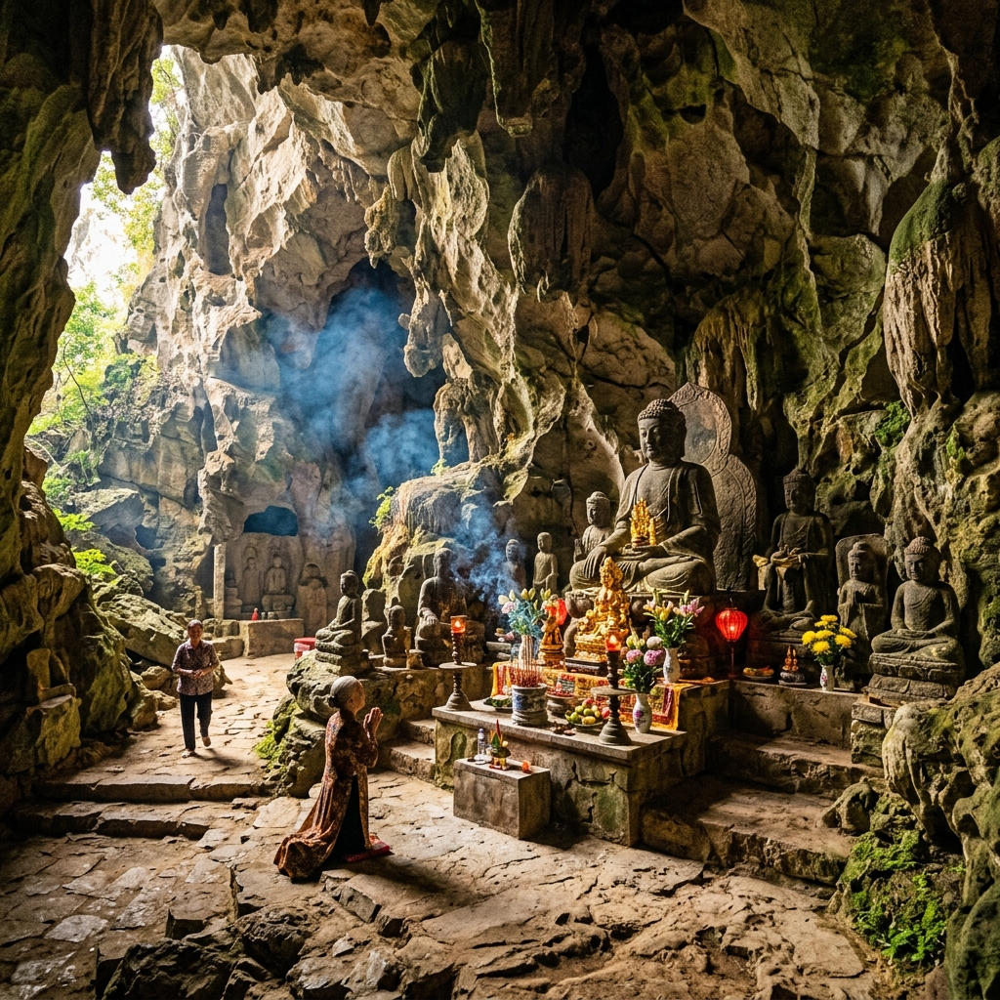

Di tích Quốc gia
Chùa Tam Thanh
Tọa lạc trong lòng núi đá vôi ở phường Tam Thanh, thành phố Lạng Sơn, Chùa Tam Thanh là một trong những ngôi chùa hang cổ kính và linh thiêng nhất Việt Nam. Ngôi chùa được xây dựng từ thời nhà Lê (thế kỷ XV), nằm sâu trong một hang đá tự nhiên rộng lớn.
Điểm nhấn đặc biệt là pho tượng Phật A Di Đà được tạc trực tiếp trên vách đá, cao gần 1 mét, mang phong cách nghệ thuật điêu khắc thời Lê tinh xảo. Bên trong hang còn lưu giữ nhiều bút tích thơ văn của các danh sĩ qua nhiều triều đại, khắc trên vách đá như những trang thư pháp sống.